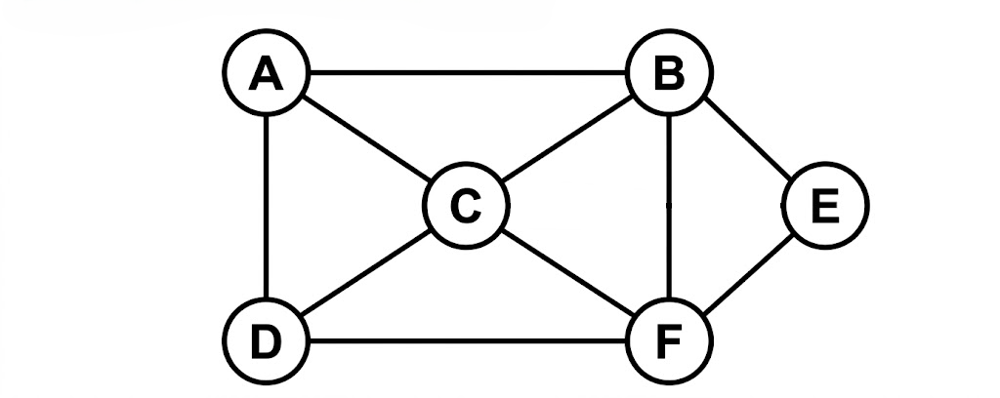

B.Tech., IV Semester
Examination, November 2022
Grading System (GS)
Max Marks: 70 | Time: 3 Hours
Note:
i) Attempt any five questions.
ii) All questions carry equal marks.
a) Write and explain the control abstraction for Divide and conquer. (Unit 1)
b) Explain the theta notation used in algorithm analysis. (Unit 1)
a) What is an algorithm? Explain its characteristics. (Unit 1)
b) Differentiate between greedy method and dynamic programming. (Unit 3)
Write a greedy algorithm to state the Job- Sequencing with deadlines problem. Find an optimal sequence to the n = 5 Jobs where profits $(P_1, P_2, P_3, P_4, P_5) = (20, 15, 10, 5, 1)$ and deadlines $(d_1, d_2, d_3, d_4, d_5) = (2, 2, 1, 3, 3)$. (Unit 2)
a) What do you mean by forward and backward approach of problem solving in Dynamic Programming? (Unit 3)
b) Discuss the need of Floyd Warshall Algorithm. Write the advantages and its time complexity. (Unit 3)
a) Find minimum path cost between vertex $s$ and $t$ for following multistage graph using dynamic programming.
![A directed multistage graph with 12 vertices. Stage 1 has vertex 1 (labeled s). Stage 2 has vertices 2, 3, 4, 5. Stage 3 has vertices 6, 7, 8. Stage 4 has vertices 9, 10, 11. Stage 5 has vertex 12 (labeled t). The directed edges and their weights are: from 1 to 2 with weight 9; 1 to 3 with weight 7; 1 to 4 with weight 3; 1 to 5 with weight 2; 2 to 6 with weight 4; 2 to 7 with weight 2; 2 to 8 with weight 1; 3 to 6 with weight 2; 3 to 7 with weight 7; 4 to 8 with weight 11; 5 to 7 with weight 11; 5 to 8 with weight 8; 6 to 9 with weight 6; 6 to 10 with weight 5; 7 to 9 with weight 4; 7 to 10 with weight 3; 8 to 10 with weight 5; 8 to 11 with weight 6; 9 to 12 with weight 4; 10 to 12 with weight 2; 11 to 12 with weight 5.](ques-diagrams/Q.4-b_june-24-Q5-a_nov-22.png)
(Unit 3)
b) Discuss the use of lower bound theory and its uses in solving the algebraic problem (Unit 4)
a) What is graph coloring problem? Describe the backtracking technique to m-coloring with following planar graph.
![A planar graph represented as a map with 5 regions. A large outer rectangular region is labeled 5. Inside it, there are four regions labeled 1, 2, 3, and 4. Region 1 is a central rectangle. Region 2 is to the right of region 1. Region 3 is situated below both region 1 and region 2. Region 4 is to the left of region 1 and region 3. Consequently, region 1 is adjacent to 2, 3, 4, and 5; region 2 is adjacent to 1, 3, and 5; region 3 is adjacent to 1, 2, 4, and 5; and region 4 is adjacent to 1, 3, and 5.](ques-diagrams/Q.6-a_nov-2022.png)
(Unit 4)
b) Write about Hamiltonian cycle. Draw portion state space tree for the following graph.

(Unit 4)
a) Construct B Tree of order 5 for the list of elements 2, 8, 5, 6, 13, 9, 14, 12, 19, 24, 18, 15, 5, 16, 20, 21 (Unit 5)
b) How do you find the height of a balanced tree? Explain with an example. (Unit 5)
Write short notes on any two of the following
i) Binary search (Unit 1)
ii) Huffman coding (Unit 2)
iii) Tree Traversals (Unit 5)
iv) NP completeness (Unit 5)